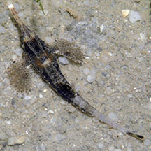
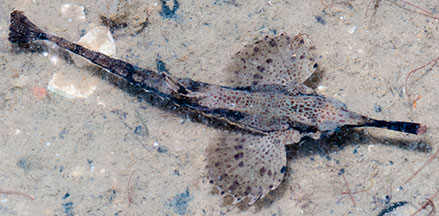
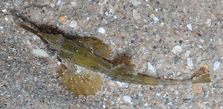
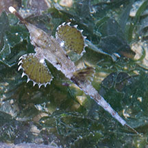
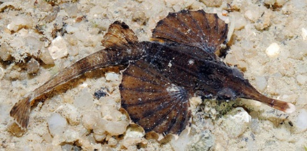
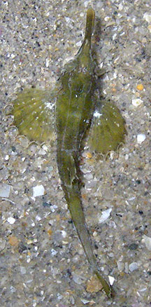
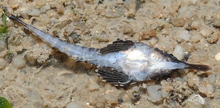

|
|
| fishes text index | photo index |
| Phylum Chordata > Subphylum Vertebrate > fishes |
| Slender
seamoth Pegasus volitans Family Pegasidae updated Sep 2020
Where seen? This odd long-nosed fish with wings is sometimes seen on some of our shores. At some times of the year, several may be seen on a single trip and then not to be seen again for some time. An active little fish, it is sometimes seen swimming about among seagrasses especially at night. Seamoths probably got their name for their long, stiff snouts and the pair of broad, fan-like pectoral fins. They are also called Sea robins. What are seamoths? Seamoths belong to Family Pegasiidae. According to FishBase: the family has 2 genera and 5 species. They are found in the Indo-West Pacific. They are sometimes also called sea robins or dragonfishes. Some scientists place them with the seahorse in the Family Syngnathidae. Pegasus is the winged horse of Greek mythology. In one version of the myth, Pegasus was the son of Poseidon, God of the Sea and Medusa. Features: 4-6cm. Body hard, enclosed by a bony skeleton of rigid plates. The tail is enclosed in bony rings. It has a long stiff pointed snout that is made up of modified nose bones. The small mouth is found under the snout. The mouth is protrusible, i.e., it can stick out of the body. The snout usually has a white or pale tip. It has large pectoral fins that are held out horizontally and often spread out like wings. The gill openings are small. Adult slender seamoths come in various colours and patterns, usually camouflaging. Young slender seamoths are sometimes all black. Seamoths are adapted for bottom-dwelling and lack swim-bladders. The Slender seamoth (Pegasus volitans) is reported to "walk" over the bottom using its pelvic fins which are reduced to a pair of slender structures. A study of captive specimens observed the fish to shed its skin in one piece with a rapid jump, to get rid of unwanted parasites or encrusting algae on their skin. One species can bury themselves in the sand and change colours to match their surroundings. |
 Changi, Aug 03 |
 Pasir Ris, Apr 10 |
 Changi, May 08 |
 Changi, May 05 |
| Seamoth
babies: Seamoths are believed to have social behaviour
and form monogamous pair bonds. Unlike seahorses, they don't brood
their young. They spawn in open water near the surface, and the juveniles
may float on open waters for some time before settling down in a sheltered
place near the shore. What do they eat? They are predators, feeding on tiny creatures on the sea bottom. These are sucked up with their small, toothless mouths found under the snout. Human uses: Seamoths are collected for use in traditional Chinese medicine, like their unfortunate cousins the seahorses and pipefishes. This puts pressure on wild populations. |
| Slender seamoths on Singapore shores |
On wildsingapore
flickr
|
| Other sightings on Singapore shores |
 Changi, May 11 |
 Changi, May 08 Photo shared by Toh Chay Hoon on flickr. |
 Photo shared by Loh Kok Sheng on his blog. |
| Filmed on Chek
Jawa, Feb 10 SeaMoth and Baby from SgBeachBum on Vimeo. |
| Family
Pegasidae recorded for Singapore from Wee Y.C. and Peter K. L. Ng. 1994. A First Look at Biodiversity in Singapore. **from WORMS +Other additions (Singapore Biodiversity Records, etc)
|
Links
|